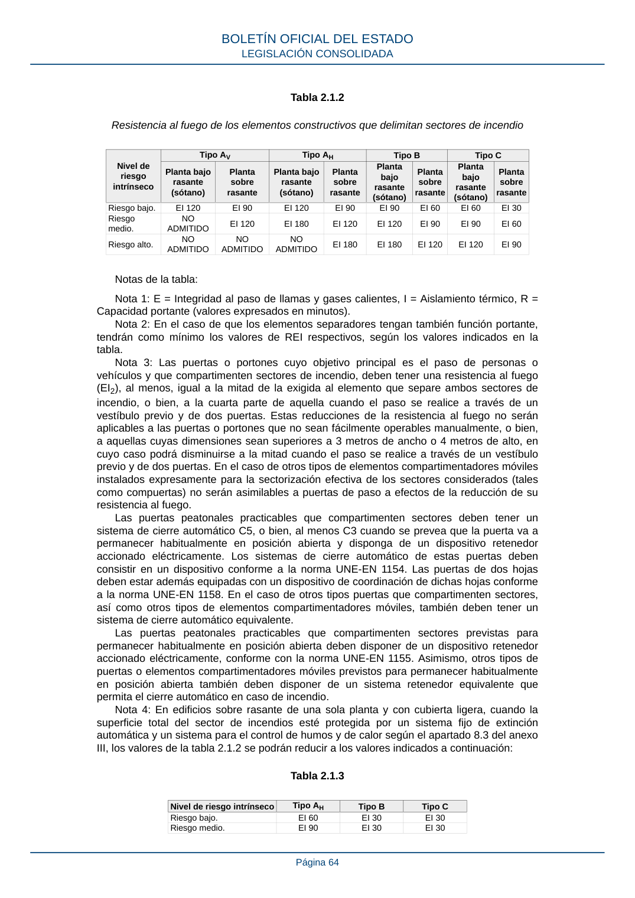

RSCIEI · edición 2025-04-10 · capa asociada
Documento RSCIEI-asociada · SHA-256 del PDF 85aa0af25d51e5b58d8975a4eefbf76d3f57a8933445cfe814ae9c4818a2e3e7
Página física 64 de 108.
Copia fiel del PDF fuente · Fuente oficial
Ficha de la disposición en la fuente oficial
Texto extraído y reorganizado: Basado en datos de la Agencia Estatal Boletín Oficial del Estado. PDF reproducido: Fuente de los datos: Agencia Estatal Boletín Oficial del Estado.
Formato: Texto de la página (Markdown)
Tabla 2.1.2 Resistencia al fuego de los elementos constructivos que delimitan sectores de incendio Nivel de riesgo intrínseco Tipo AV Tipo AH Tipo B Tipo C Planta bajo rasante (sótano) Planta sobre rasante Planta bajo rasante (sótano) Planta sobre rasante Planta bajo rasante (sótano) Planta sobre rasante Planta bajo rasante (sótano) Planta sobre rasante Riesgo bajo. EI 120 EI 90 EI 120 EI 90 EI 90 EI 60 EI 60 EI 30 Riesgo medio. NO ADMITIDO EI 120 EI 180 EI 120 EI 120 EI 90 EI 90 EI 60 Riesgo alto. NO ADMITIDO NO ADMITIDO NO ADMITIDO EI 180 EI 180 EI 120 EI 120 EI 90 Notas de la tabla: Nota 1: E = Integridad al paso de llamas y gases calientes, I = Aislamiento térmico, R = Capacidad portante (valores expresados en minutos). Nota 2: En el caso de que los elementos separadores tengan también función portante, tendrán como mínimo los valores de REI respectivos, según los valores indicados en la tabla. Nota 3: Las puertas o portones cuyo objetivo principal es el paso de personas o vehículos y que compartimenten sectores de incendio, deben tener una resistencia al fuego (EI2), al menos, igual a la mitad de la exigida al elemento que separe ambos sectores de incendio, o bien, a la cuarta parte de aquella cuando el paso se realice a través de un vestíbulo previo y de dos puertas. Estas reducciones de la resistencia al fuego no serán aplicables a las puertas o portones que no sean fácilmente operables manualmente, o bien, a aquellas cuyas dimensiones sean superiores a 3 metros de ancho o 4 metros de alto, en cuyo caso podrá disminuirse a la mitad cuando el paso se realice a través de un vestíbulo previo y de dos puertas. En el caso de otros tipos de elementos compartimentadores móviles instalados expresamente para la sectorización efectiva de los sectores considerados (tales como compuertas) no serán asimilables a puertas de paso a efectos de la reducción de su resistencia al fuego. Las puertas peatonales practicables que compartimenten sectores deben tener un sistema de cierre automático C5, o bien, al menos C3 cuando se prevea que la puerta va a permanecer habitualmente en posición abierta y disponga de un dispositivo retenedor accionado eléctricamente. Los sistemas de cierre automático de estas puertas deben consistir en un dispositivo conforme a la norma UNE-EN 1154. Las puertas de dos hojas deben estar además equipadas con un dispositivo de coordinación de dichas hojas conforme a la norma UNE-EN 1158. En el caso de otros tipos puertas que compartimenten sectores, así como otros tipos de elementos compartimentadores móviles, también deben tener un sistema de cierre automático equivalente. Las puertas peatonales practicables que compartimenten sectores previstas para permanecer habitualmente en posición abierta deben disponer de un dispositivo retenedor accionado eléctricamente, conforme con la norma UNE-EN 1155. Asimismo, otros tipos de puertas o elementos compartimentadores móviles previstos para permanecer habitualmente en posición abierta también deben disponer de un sistema retenedor equivalente que permita el cierre automático en caso de incendio. Nota 4: En edificios sobre rasante de una sola planta y con cubierta ligera, cuando la superficie total del sector de incendios esté protegida por un sistema fijo de extinción automática y un sistema para el control de humos y de calor según el apartado 8.3 del anexo III, los valores de la tabla 2.1.2 se podrán reducir a los valores indicados a continuación: Tabla 2.1.3 Nivel de riesgo intrínseco Tipo AH Tipo B Tipo C Riesgo bajo. EI 60 EI 30 EI 30 Riesgo medio. EI 90 EI 30 EI 30 BOLETÍN OFICIAL DEL ESTADO LEGISLACIÓN CONSOLIDADA Página 64

Datos candidatos: compruebe celdas y notas en el PDF.